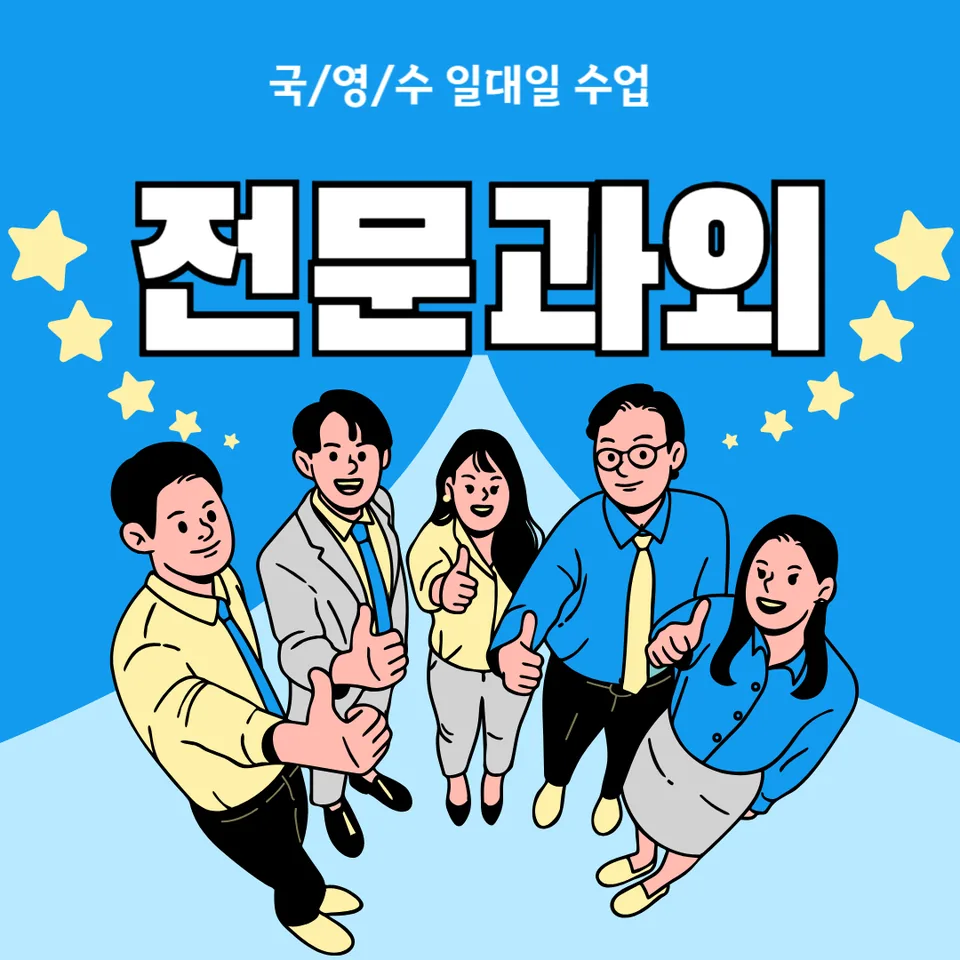

PageType : SUBJECT
URL : /경기도과외/시흥시과외/대야동과외/대야동영어과외/
지역 교육환경이 영어 학습에 미치는 영향
대야동영어과외를 찾는 학생들을 보면, 시작점은 비슷해도 ‘주변에서 영어를 공부하는 방식’이 다르게 작동합니다. 대야동영어과외 환경에서는 학교 영어 활동과 지역 학습 분위기가 이어지며, 학생은 수업을 듣는 시간보다도 집에서 무엇을 선택하는지에 더 민감해집니다. 특히 또래가 독해 과제를 공유하거나, 듣기 자료를 정해두는 흐름이 생기면 영어 학습은 자연스럽게 루틴이 되기 쉽습니다.
학습 환경의 차이는 집중의 형태로 드러납니다. 어떤 학생은 어휘를 하루 분량으로 쌓다가도 읽기에서 막히고, 또 다른 학생은 듣기에서 흥미가 붙어 문장 구조를 스스로 찾아가려는 경향이 있습니다. 결국 대야동영어과외에서 중요한 건 ‘실력을 늘릴 방법’이 아니라, 학교에서 발생하는 요구(내신, 수행평가, 수업 시간 확인)와 가정에서 만드는 대응(영어 공부습관)을 연결해주는 과정입니다.
지역마다 학원 밀도나 스터디 문화가 다르므로, 영어 실력은 한 가지 스킬로만 성장하지 않습니다. 듣기·읽기 균형이 무너질 때는 자신감이 먼저 흔들리고, 이후 문법과 구문 학습이 있어도 적용이 늦어집니다. 그래서 대야동영어과외에서는 영어를 ‘따로’ 하지 않게 만드는 쪽으로 방향을 잡습니다. 독해는 어휘와 문장 이해가 모이면 열리고, 문법은 문제 풀이가 아니라 문장 속에서 의미를 붙잡는 경험으로 굳어지기 때문입니다.
학교마다 달라지는 영어 평가 방식
대야동영어과외 학습 계획을 세울 때는 학교 평가 방식의 결을 먼저 살핍니다. 같은 학년이라도 내신 비중, 수행평가 구성, 시험 범위의 운영 방식이 달라서 학습 전략이 달라지기 때문입니다. 학교에서 단답형이 많으면 학생은 정답 패턴에 익숙해지려 하고, 서술형이나 과정 중심이 강조되면 문장 흐름과 근거 제시가 중요해집니다. 이 차이는 독해 훈련의 형태를 바꾸며, 오답이 반복되는 이유도 분명해집니다.
평가가 바뀌면 학생의 집중 목표도 달라집니다. 내신을 준비하는 기간에는 ‘표면적으로 맞히는 능력’이 먼저 올라가고, 시험 이후에는 문장 이해의 공백이 드러나는 경우가 많습니다. 수행평가가 포함될 때는 발표나 읽기 결과물처럼 영어를 쓰는 경험이 생기지만, 학생은 글을 완성하기보다 문장 단위의 확신을 만들지 못하면 멈칫합니다. 대야동영어과외에서는 이 구간에서 영어 공부의 방향을 조정해, 문법·어휘·구문의 연결이 보이도록 학습 과정을 재구성합니다.
또 하나의 관찰 포인트는 듣기와 읽기 점수의 동시 변화입니다. 학교 시험이 듣기 비중을 크게 다루면 학생은 단기 집중이 강해지지만, 읽기에서 문장 구조를 놓치면 다음 평가에서 다시 하락합니다. 그러므로 대야동영어과외에서는 학교별 시험 패턴을 단순히 외우는 대신, 시간이 지나도 재현되는 학습 습관으로 바꾸는 데 초점을 둡니다. 복습과 오답 관리가 결국 평가 방식과 맞물리는 이유가 여기에 있습니다.
학생들이 영어에서 어려움을 느끼는 시점
대부분의 학생은 같은 과정을 겪습니다. 처음에는 어휘와 문장 수준이 맞아 떨어져 영어 학습에 흥미가 생기지만, 어느 순간 ‘속도’가 벽처럼 느껴집니다. 읽기에서 문장이 길어지거나, 듣기에서 속도가 빨라지는 시점에 자신감이 흔들리며, 이때 문법을 다시 보려 해도 적용이 늦어지는 일이 자주 나타납니다. 대야동영어과외를 고려하는 시기도 대개 이 전환점에서 시작됩니다.
초기에 재미를 느끼던 학생도 학습 부담이 커지는 국면에서는 목표가 바뀝니다. 수업 후 숙제를 할 때, 학생이 단어장을 펼치는 대신 ‘문장 이해 없이 넘기기’를 선택하면 독해는 계속 정체됩니다. 결국 어휘가 누적되지 않은 상태에서 구문을 해석하려 하므로 오답이 늘고, 오답이 늘면 다시 복습을 미루는 패턴이 굳어집니다. 여기서 중요한 건 ‘더 많이’가 아니라 ‘왜 틀렸는지’를 읽는 습관입니다.
또한 학년이 올라가며 영어 평가의 요구 수준이 바뀌면, 학생은 같은 공부 시간을 써도 만족감을 덜 느끼는 시기가 옵니다. 시험 준비가 본격화될 때는 시간 효율을 따지며 문제를 빠르게 처리하려 하지만, 문장 이해가 약한 상태에서 속도만 올리면 듣기·독해 모두 흔들립니다. 대야동영어과외에서는 이 불균형을 조기에 확인해, 영어 실력이 성장하는 단계에 맞춘 학습 순서를 잡아주는 방식으로 접근합니다.
학년 변화에 따른 영어 학습의 차이
학년이 올라갈수록 학생의 학습 부담은 양적으로 커지고, 동시에 ‘학습 방식’이 달라져야 합니다. 초반에는 단어와 짧은 문장으로 감각을 잡았다면, 중후반에는 구문과 문장 흐름을 통째로 이해하는 방향이 필요합니다. 대야동영어과외에서 학년 전환기에 특히 많이 다루는 부분도 바로 이 변화입니다. 독해는 문장 이해가 쌓이면서 편해지는데, 학생이 문법을 개념으로만 남겨두면 읽기에서 막히게 됩니다.
학년이 높아질수록 어휘 학습은 단순 암기가 아니라 누적 구조로 이어져야 합니다. 같은 단어를 보더라도 문장 속 역할이 다르게 요구되기 때문입니다. 그래서 대야동영어과외에서는 어휘를 독해, 문장 구성, 듣기 단서와 연결해 ‘다음 문장을 예측하는 힘’으로 확장합니다. 이 과정이 자리 잡히면 문법도 실제 문제에 적용되는 경험처럼 느껴져, 시험 직전에 급하게 다시 보는 태도가 줄어듭니다.
공부 습관 역시 변합니다. 낮은 학년에서는 숙제를 끝내는 것으로 성취감이 생기지만, 학년이 올라가면 복습이 성적의 바닥을 결정합니다. 오답을 확인하고 끝내는지, 복습과 오답 정리가 이어지는지에 따라 영어 실력의 상승 곡선이 달라집니다. 대야동영어과외에서는 시험 기간에도 학습을 분절하지 않도록, 자기주도학습이 스스로 돌아가는 구조를 만들어줍니다.
내신과 수행평가를 함께 준비하는 방법
내신과 수행평가를 동시에 준비할 때 학생이 놓치기 쉬운 점은 ‘형식의 차이’입니다. 시험은 정해진 범위에서 빠르고 정확하게 처리해야 하지만, 수행평가에는 자료 이해와 표현 과정이 섞입니다. 대야동영어과외에서는 학교에서 요구하는 산출물의 성격을 기준으로 학습을 조정합니다. 예를 들어 내신 준비가 독해 중심이라면, 수행평가에서 요구하는 문장 구성 경험도 함께 설계합니다.
준비가 꼬이는 지점은 종종 오답입니다. 학생은 오답을 보고도 이유를 특정하지 않으면, 다음 시험에서 같은 실수를 반복합니다. 그래서 대야동영어과외에서는 오답을 ‘문장 이해 실패’, ‘어휘 선택 오류’, ‘문법 적용 미스’, ‘듣기 단서 누락’처럼 분류해 복습의 방향을 정합니다. 오답 정리가 이어지면 복습은 막연한 재시도가 아니라, 다음 학습에 바로 투입되는 과정이 됩니다.
시간을 효율적으로 쓰는 방법도 시험 기간에 맞춰 바뀝니다. 문제를 푸는 시간과 문장 이해를 되짚는 시간을 분리하지 않으면 학습이 빠르게 쌓이지 않습니다. 내신 시험이 다가올수록 학생은 ‘풀기’에 몰리는데, 대야동영어과외에서는 독해-어휘-문법 적용이 한 흐름으로 이어지게 훈련합니다. 그 결과 듣기와 읽기의 균형이 흔들리지 않고, 내신 범위와 수행평가 준비가 같은 방향으로 수렴합니다.
꾸준한 학습 습관이 만드는 영어 실력
영어를 잘하는 학생에게서 공통적으로 보이는 것은 특별한 재능이 아니라 공부 습관의 일관성입니다. 대야동영어과외를 통해 계획을 잡는 학생들은 주로 ‘짧지만 자주’의 방식을 택합니다. 하루에 몰아서 하기보다, 독해에 필요한 어휘와 구문을 조금씩 다시 만나게 하면서 영어 실력을 누적시키는 방식입니다. 이 방식은 듣기 훈련에서도 비슷하게 작동합니다.
학습이 지속될 때 자신감이 형성되는 과정도 관찰됩니다. 처음에는 정답률이 오르며 만족감이 생기지만, 조금 더 시간이 지나면 문장 이해가 자연스러워져 ‘왜 읽히는지’가 설명 가능해집니다. 그때부터 학생은 영어를 공부하는 이유를 내부에서 찾게 됩니다. 대야동영어과외에서는 이 단계를 목표로 삼아, 매번 새로운 문제를 덮어두는 방식이 아니라 복습과 연결되는 방식으로 학습을 정렬합니다.
자기주도학습이 자리 잡는 과정은 의외로 복잡하지 않습니다. 먼저 학생이 오답을 기록하고, 그 기록이 다음 주의 학습으로 이어지는 구조가 있어야 합니다. 이후 듣기와 읽기 중 한쪽만 과도하게 줄어들지 않게 균형을 유지하며, 어휘 학습이 누적되도록 시간을 배치합니다. 결국 영어를 꾸준히 공부하는 습관은 시험 점수의 순간 상승이 아니라, 학습 지속성에서 만들어지는 변화입니다.
복습과 오답 관리가 중요한 이유
복습은 ‘지난 내용 다시 보기’가 아니라, 다음 이해를 위한 회로를 재구성하는 작업에 가깝습니다. 대야동영어과외에서 학생들이 가장 빠르게 변하는 구간도 오답을 다룰 때입니다. 같은 지문을 다시 읽더라도 오답 원인을 알고 접근하면 문장 이해의 관점이 달라지고, 결과적으로 독해가 더 정확해집니다. 이때 문법과 어휘는 개념으로 돌아오는 것이 아니라, 문장 속 역할로 재등장합니다.
오답이 반복되는 학생에게는 공통 신호가 있습니다. 문제를 풀 때는 알 것 같다고 느끼지만, 복습을 시작하면 어디서 놓쳤는지 설명하지 못합니다. 대야동영어과외에서는 학생이 스스로 빈칸을 채우듯 원인을 말하도록 유도하지 않고, 관찰 가능한 단서(어휘 선택, 구문 해석, 듣기 전환, 문장 흐름 누락)를 기준으로 체크하게 합니다. 이렇게 분류된 오답은 복습의 우선순위를 만들어주며 학습 효율을 높입니다.
시험 기간에는 특히 오답 관리가 흔들리기 쉽습니다. 시간이 부족하다고 느끼면 학생은 해설을 빠르게 보고 넘기고, 다음 시험에서 같은 오류가 다시 나타납니다. 그래서 대야동영어과외에서는 복습 시간을 고정하고, 오답을 ‘다음 학습으로 이어지는 자료’로 남기는 흐름을 유지합니다. 복습과 오답 정리가 이어질수록 학습 내용을 장기 기억으로 연결하는 힘이 커집니다.
영어 학습에서 확인해야 할 핵심 요소
대야동영어과외에서 영어 공부 과정을 점검할 때는 핵심 요소를 한 줄로 묶어봅니다. 첫째는 학습 계획이 학교 시험 범위와 연결되는지입니다. 수업에서 다룬 문장과 단어가 내신에서 반복되는 방식이 있으므로, 공부습관은 ‘다음 시험의 문장 형태’를 기준으로 설계되어야 합니다. 둘째는 독해·문법·어휘를 분리하지 않고 함께 학습하는 흐름입니다.
셋째 요소는 문장 이해가 어느 순간 끊기는지 확인하는 습관입니다. 학생이 구문을 보며 멈추는지, 어휘에서 흔들리는지, 듣기 단서에서 놓치는지를 구분하면 같은 시간을 써도 성장 속도가 달라집니다. 넷째로는 영어 학습에서 자기주도학습이 자리 잡는 과정이 이어지는지 보게 됩니다. 오답을 기록하고 복습으로 연결되는지, 시험이 끝난 뒤에도 영어를 계속 공부하는 동력이 남는지가 중요합니다.
다섯째는 시간 사용 방식입니다. 문제를 많이 푸는 것만으로는 부족하고, 해설을 읽은 뒤 문장 이해를 다시 만들고, 어휘와 구문을 다음 읽기에서 재사용하는 시간이 필요합니다. 대야동영어과외를 통해 학생이 영어 실력의 성장 단계를 경험하면, 결국 내신·수행평가·학교 수업이 같은 방향으로 맞춰집니다.
- 학교 시험 범위와 학습 계획이 연결되고 있는지 확인합니다.
- 독해·문법·어휘를 분리하지 않고 함께 학습하는 습관을 기릅니다.
- 오답의 원인을 분석하고 반복되는 실수를 줄이는 과정을 이어갑니다.
- 정기적인 복습으로 학습 내용을 장기 기억으로 연결합니다.
자주 묻는 질문
영어 학습은 언제부터 체계적으로 준비하는 것이 좋을까요?
대야동영어과외를 준비하는 학생들 기준으로는, 학교에서 시험 범위가 본격화되기 전부터 ‘독해-어휘-문장 이해’ 흐름이 잡혀 있는 편이 유리합니다. 특히 학년이 올라가며 학습 부담이 커질 때, 듣기와 읽기의 균형이 무너지지 않도록 공부습관을 먼저 정리하는 시점이 중요합니다.
학교 내신과 모의고사는 어떻게 함께 준비해야 하나요?
대야동영어과외에서는 내신 중심 학습에서 지문 유형과 어휘의 재등장을 확인하고, 그 방식 그대로 모의고사 읽기에서도 문장 흐름을 재사용하게 합니다. 시험 기간에는 오답 복습 시간을 고정해 같은 실수가 반복되지 않게 관리하는 것이 핵심입니다.
영어 독해 실력은 어떤 과정으로 향상될 수 있나요?
독해는 단어를 아는 것만으로 끝나지 않고 구문과 문장 이해가 맞물릴 때 열립니다. 대야동영어과외에서는 듣기에서 익힌 문장 리듬과 어휘를 연결해 읽기에서 예측을 만들고, 오답을 기준으로 문장 속 역할을 다시 잡는 과정을 반복합니다.
어휘와 문법은 어떤 순서로 학습하는 것이 효과적인가요?
대야동영어과외에서는 어휘를 먼저 ‘문장 속에서 어떤 역할을 하는지’와 함께 만나게 하고, 문법은 그 역할을 설명하는 도구로 붙입니다. 이렇게 해야 실제 독해에서 문법이 적용되는 경험이 생기고, 문장 이해가 안정적으로 유지됩니다.
공부 습관을 꾸준히 유지하려면 무엇이 중요할까요?
대야동영어과외에서 가장 자주 조정하는 부분은 복습과 오답 관리가 습관으로 남는 구조입니다. 짧은 시간이라도 정해진 순서로 복습이 이어지면 영어를 계속 공부하는 동력이 생기고, 시험이 지나도 학습이 끊기지 않습니다.
